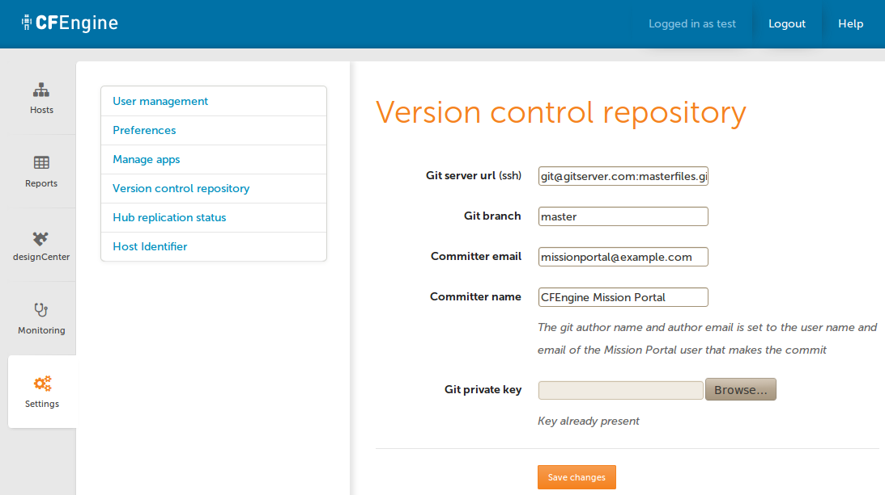
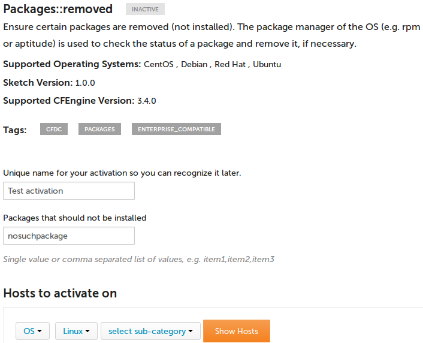

Integrating Mission Portal with git
CFEngine Enterprise 3.5 introduces integration with git repositories for managing CFEngine policy. In particular, the Design Center GUI requires access to a git repository in order to manage sketches.
These instructions will cover the setup of a git repository hosted on the Policy Server with the initial CFEngine masterfiles together with configuring the CFEngine Mission Portal to use this repository. If you already have a git service ensure that you have a passphraseless key generated as shown in Set up the git service step 4 and proceed to Connect Mission Portal to the git repository.
When following these steps, it might be helpful to look at the diagram in the CFEngine Enterprise sketch flow.
Requirements
We will need a git service with the capability to serve git over a key-based SSH channel. The easiest way to do this is to use a service like github. But it is not hard to set up a local git service either.
For Red Hat (and derived distributions), we need to do the following steps to set up a local git service.
Overview
- Set up the git service
- Initialize the git repository
- Update masterfiles from git
- Connect Mission Portal to the git repository
- Testing Design Center GUI
- Review change history from git commit log
- End to end waiting time
- Access control and security
Set up the git service
As
rooton the policy server install third party repository that provides git. This is only required if git is not available in the default repositories, for example RHEL 5.root@policyserver # wget http://dl.fedoraproject.org/pub/epel/5/x86_64/epel-release-5-4.noarch.rpm root@policyserver # rpm -Uvh epel-releases-5*.rpmInstall the
gitpackage.root@policyserver # yum install gitCreate the
gituser and a.sshdirectory.root@policyserver # adduser git root@policyserver # su - git git@policyserver $ mkdir ~/.ssh git@policyserver $ chmod 700 ~/.sshGenerate a passphraseless ssh key to be used by Misson Portal.
root@policyserver $ /usr/bin/ssh-keygen -C 'Mission Portal' -N '' -f mission_portal_id_rsaNote: This key is only intended for use by Mission Portal.
Authorize the Mission Portal's key for the
gituser by appending the public key to the git users~/.ssh/authorized_keysfile.root@policyserver $ grep "$(cat mission_portal_id_rsa.pub)" /home/git/.ssh/authorized_keys || \ cat mission_portal_id_rsa.pub >> /home/git/.ssh/authorized_keys; \ chown git:git /home/git/.ssh/authorized_keys; \ chmod 700 /home/git/.ssh/authorized_keysTest that you can log in as the
gituser using the generated passphraseless ssh key.root@policyserver $ ssh -i mission_portal_id_rsa git@localhost git@policyserver $Once the authorization is tested successfully you should move the keypair to a secure storage location. You may want to authorize additional keys for users to interface with the repository directly. Only the Mission Portal key needs to be passphraseless. Your git server may have additional features like the ability to make a specific key read only. See your git providers documentation for more information.
As the
gituser on the policy server Create themasterfilesrepository.git@policyserver $ git init --bare masterfiles.git Initialized empty Git repository in /home/git/masterfiles.git/
Initialize the git repository
As the git user create a clone of the
masterfilesrepository.git@policyserver $ git clone ~/masterfiles.git ~/masterfiles Initialized empty Git repository in /home/git/masterfiles/.git/ warning: You appear to have cloned an empty repository. git@policyserver $ cd masterfilesCopy and push initial masterfiles.
git@policyserver $ cp -R /var/cfengine/share/NovaBase/* . git@policyserver $ git add -A git@policyserver $ git commit -m "initial masterfiles" git@policyserver $ git push origin masterEnsure that
cf_promises_validatedis not included in your repository.git@policyserver $ git rm -f cf_promises_validated git@policyserver $ echo cf_promises_validated > .gitignore git@policyserver $ git add .gitignore git@policyserver $ git commit -m "Exclude cf_promises_validated from repository" git@policyserver $ git push origin master
Update masterfiles from git
We have now set up a git repository however, nothing will change on the
CFEngine hosts until we pull the policy from git into
/var/cfengine/masterfiles on the policy server. This can be done by CFEngine
itself every time cf-agent runs on the policy server, or by utilizing a cron
job or similar facilities.
It is not a requirement to set up automatic pull from the git service,
but no actions will be taken by CFEngine on the end hosts, nor will any
reports come back, until the policy from git is copied into
/var/cfengine/masterfiles on your policy server.
The following steps show how to configure cf-agent on the policy server to
pull from git every time it runs (by default every 5 minutes).
On a working copy of your git repository, add the promise to update from git. Create
update/update_from_repository.cfwith the following content.bundle agent update_from_repository { commands: am_policy_hub:: "/usr/bin/git fetch --all" contain => u_no_output; "/usr/bin/git reset --hard origin/master" # change to your branch contain => u_no_output; } body contain u_no_output { no_output => "true"; chdir => "/var/cfengine/masterfiles"; }Modify
update.cfto includeupdate_from_repository.cfininputsandupdate_from_repositoryinbundlesequenceof body common control.user@workstation $ git diff update.cf diff --git a/update.cf b/update.cf index 9c6c298..ab5cc1f 100755 --- a/update.cf +++ b/update.cf @@ -14,6 +14,7 @@ body common control bundlesequence => { "cfe_internal_update_bins", + "update_from_repository", "cfe_internal_update_policy", "cfe_internal_update_processes", }; @@ -23,6 +24,7 @@ body common control inputs => { "update/update_bins.cf", "update/update_policy.cf", + "update/update_from_repository.cf", "update/update_processes.cf", };Commit the two above changes to the git service.
user@workstation $ git add update.cf update/update_from_repository.cf user@workstation $ git commit -m "automatically fetch masterfiles from git" user@workstation $ git push origin master # change to your branchLog in to the policy server as root and make sure CFEngine is not running.
root@policy_server # /etc/init.d/cfengine3 stop Shutting down cf-execd: [ OK ] Shutting down cf-serverd: [ OK ] Shutting down cf-monitord: [ OK ]Move current masterfiles out of the way.
root@policy_server # mv /var/cfengine/masterfiles/ /var/cfengine/masterfiles.origClone your git repository into /var/cfengine/masterfiles.
If your git server is remote you must ensure the root user has ssh keys configured to allow passphraseless access to the git repository
```console root@policy_server # git clone git@gitserver:masterfiles.git /var/cfengine/masterfiles Initialized empty Git repository in /var/cfengine/masterfiles/.git/ ```If you are hosting the git repository on the policy server itself you can clone using its full path
```console root@policy_server # git clone /home/git/masterfiles.git /var/cfengine/masterfiles ```
Make sure that the policy has valid syntax.
cf-promisesshould not give output.root@policy_server # /var/cfengine/bin/cf-promises -f /var/cfengine/masterfiles/update.cfStart CFEngine again.
root@policy_server # /etc/init.d/cfengine3 start
Connect Mission Portal to the git repository
- Log in to the Mission Portal as an administrator (e.g. the
adminuser). - Navigate to Settings -> Version control repository.
- Input the settings from the git service that you are using or configured. The values for the fields based on the previous instructions for setting up a local git server are as follows:
* Git server url: `git@localhost:masterfiles.git`
* Git branch: `master`
* Committer email `git@localhost.localdomain`
* Committer name `CFEngine Mission Portal`
* Git private key `mission_portal_id_rsa` As generated in step 5 of
[Set up the git service][Integrating Mission Portal with git#Set up the
git service] (You will need to copy the private key to your workstation
so that it can be accessed via the file selection.
- Click save settings and make sure it reports success.

Testing Design Center GUI
- Log in to the Mission Portal as an administrator (e.g. the
adminuser). - Click on the
Design Centerapp at the left. - You should now see a listing of some sketches that are available out of the box.
- Click on the
Packages::packages_removedsketch. - Fill out the fields as shown by the example below, and click
Show HostsandActivate.
- Type in "My test activation" into the commit message box and commit.
Review change history from git commit log
Our test sketch is now committed to the git repository. Go to a clone of the git repository, pull from the git service and see that the commit is there:
Fetch our latest commit.
$ git fetch upstreamRebase, adjust to the branch you are using (master in this example).
$ git rebase upstream/masterNote that the git author (name and email) is set to the user of the Mission Portal, while the git committer (name and email) comes from the Mission Portal settings, under Version Control Repository.
$ git log --pretty=format:"%h - %an, %ae, %cn, %ce : %s" 4190ca5 - test, test@localhost.com, Mission Portal, missionportal@cfengine.com : My test activation
We have now confirmed that the Mission Portal is able to commit to our git service, and that author information is kept.
Filtering commits by Mission Portal and users
If the Mission Portal is just one out of several users of your git service, you can easily filter which commits came from the Mission Portal, and which users of the Mission Portal authored the commit.
Show all commits done through Mission Portal
In order to see only commits made by users of the Mission Portal, we filter on the committer name. Note that this needs to match what you have configured as the committer name in the settings, under Version Control Repository (we are using 'Mission Portal' in the example below).
We can also see the user name of the Mission Portal user by printing the author name.
$ git log --pretty=format:"%h %an: %s" --committer='Mission Portal'
0ac4ae0 bob: Setting up dev environment. Ticket #123.
5ffc4d1 bob: Configuring postgres on test environment. Ticket #124.
4190ca5 bob: My test activation
0ac4ae0 tom: remove failed activation
5ffc4d1 tom: print echo example
dc9518d rachel: Rolling out Apache, Phase 2
3cfaf93 rachel: Rolling out Apache, Phase 1
Show commits by a Mission Portal user
If you are only interested in seeing the commits by a particular user of the Mission Portal, you can filter on the author name as well ('bob' in the example below).
$ git log --pretty=oneline --abbrev-commit --committer='Mission Portal' --author='bob'
0ac4ae0 Setting up dev environment. Ticket #123.
5ffc4d1 Configuring postgres on test environment. Ticket #124.
4190ca5 My test activation
End to end waiting time
If we set up the CFEngine policy server to pull automatically from git and CFEngine runs every 5 minutes everywhere (the default), the maximum time elapsed from committing to git until reports are collected is 15 minutes:
- 0 minutes: commit to git (e.g. from the Design Center GUI).
- 5 minutes: the policy server has updated
/var/cfengine/masterfiles. - 10 minutes: all hosts have downloaded and run the policy.
- 15 minutes:
cf-hubon the database server has collected reports from all hosts.
Access control and security
Please see Access control for Design Center in the Mission Portal for an introduction to how to allow or limit the Mission Portal users' ability to commit to the git repository and make changes to the hosts.